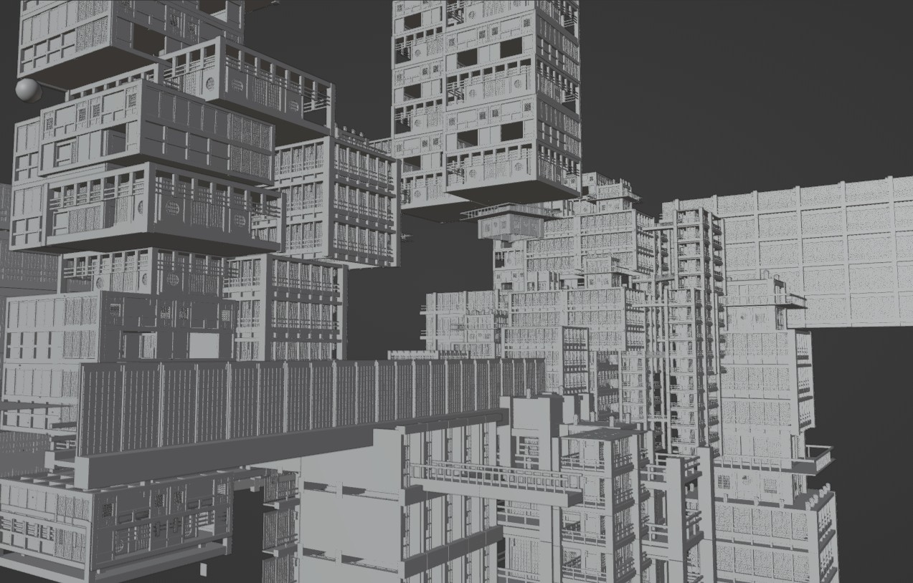
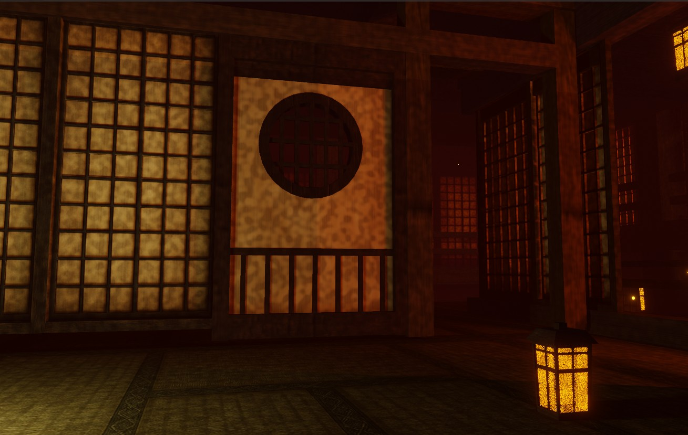
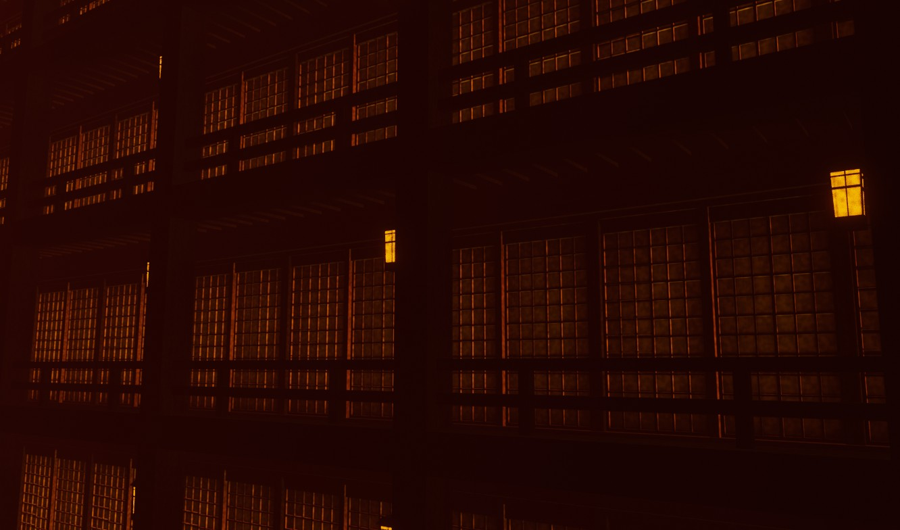

SPACE DESIGN
空間の奥行きが物語を呼び込む
CONCEPT
果てしなく続く回廊と、どこからともなく差し込む光をテーマにした空間作品。 現実には存在しない構造でありながら、 “そこに確かに空気が流れている”と感じられるよう、 光の角度、床の反射、影の落ち方を丁寧に構成しました。 空間そのものが物語の入口となるよう、 余白を残したバランスでまとめています。
TECHNIQUE
床の反射は強くしすぎず、奥行きが自然に伸びて見えるように ラフネスと反射率を細かく調整しています。 ライトは複数点を弱めに配置し、光源そのものが目立ちすぎないように 環境光と直射光のバランスを取っています。 カメラは望遠寄りのレンズ設定を使用し、空間の圧縮感と奥行きの連続性を強調。 グリッド構造の繰り返しによる “無限感” を表現しています。
GALLERY


